URLyBird
UserGuide
Introduction
Getting Started: Stand
Alone Mode
Getting Started: Networked
Mode
Getting Started:
Network Database Server
Setting the Preferences
Changing Modes
Searching for Rooms
Booking a Room
Administration
Introduction
This is a user guide that will help a new user get started using the
URLyBird application.
The guide is separated into sub-sections which focus on
specific areas of the system.
Screen shots are included to provide better understanding of the user
interface.
The application can be started in three modes:
- Alone
- Server
- Default
- Alone mode uses a local database and no networking.
- Server mode starts the remote server and serves network clients
- Default mode starts the network client and bypasses the local
databases.
All configuration is done in the preferences dialog of the user
interface. This is the first thing that you should do.
You can modify the preferences in any gui mode, it is reccommended that
you restart the application for the new settings to take effect.
Back To Top
Getting Started:
Stand Alone Mode
To start the application in stand alone mode (Offline Mode),
go to the
directory where runme.jar exists, then execute the
following command:
java -jar runme.jar alone
Alternatively, you can also provide the fully qualified path name to
the jar file from any directory.
The
application will start in Offline mode and the following window will
open:
If you are starting the application for the first time:
- Please be sure that the preferences section is accurate.
- This can be done through the
Help>Preferences section.
- Locate your local database file.
- Select the correct magic cookie value for the local database
number.
To make these settings see the Preferences
section.
Your
preferences file will be saved in the directory from where the
application was started.
You have the option to dynamically switch to the networked mode, or
Work Online from the main menu.
In this mode the gui will communicate to a remote database. This is
explained in the next section.
Back To
Top
Getting Started:
Networked Mode
To start the application in networked mode (Online Mode), be sure that
the server is running.
For help on starting the server click here.
Go to the
directory where the runme.jar file
exists, then execute the
following command:
java -jar runme.jar
Alternatively, you can also provide the fully qualified path name to
the jar file from any directory.
Once the command is executed the application starts in Online mode.
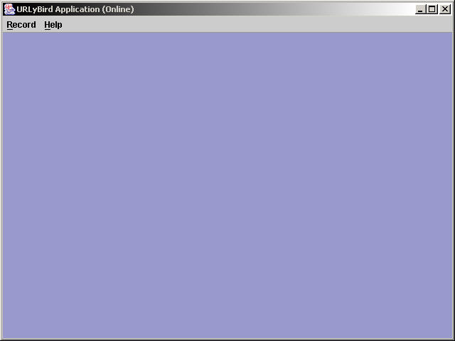
If you are starting the application in Online mode for the first time,
- Locate your remote server host name - enter the dns or IP.
- Registry lookup name - has to match the server.
- Communication protocol (rmi) - currently rmi is the only supported protocol.
- Communication Port
- Local Database and Magic cookie value have no effect.
You can dynamically switch to offline mode, in which case you will
disconnect from the remote server and work in offline mode.
See the Stand Alone Mode
section for more information.
To make these settings see the Preferences
section.
Back To
Top
Getting
Started: Network Database Server
The application has a server functionality which serves remote client
over the network.
It uses rmi and jrmp for communication and the clients must be
configured for the server.
To start the network database server:
- Go to the user directory (where
runme.jar exists)
- Execute the following command: java -jar runme.jar
server
- Hit ALT-S-S to start the server, or navigate to
Server>Start Server.
The server gui window will appear when the command is executed
see below:
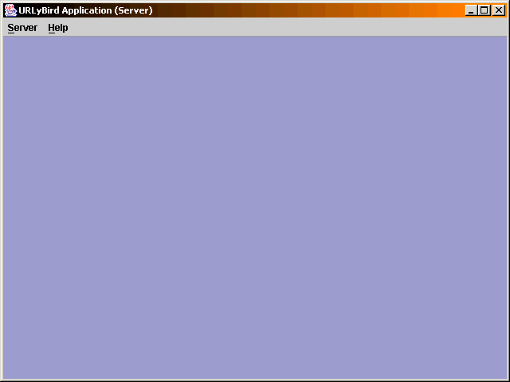
If you are starting the server for the first time set the following in
the preferences:
- Registry lookup name
- Communication Protocol - only rmi is currently supported.
- Communication Port.
- Local database
- Magic Cookie Value
- Remote Host has no effect
After the preferences are changed exit and restart the application in
server mode for the new settings to take effect.
To make these settings see the Preferences
section.
To start the server use the menu below and click start server.
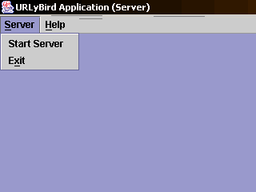
On starting the server the following console should appear if all is
fine.
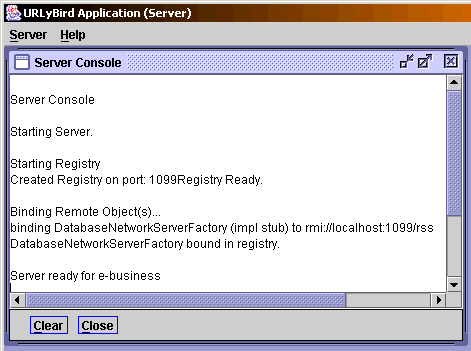
If the server starts up successfully the "Server ready for e-business"
will be displayed.
To stop the server use the menu as shown below:
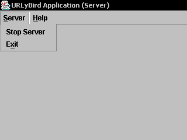
Clicking on stop server brings the following messages to the
console:
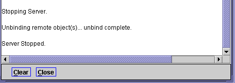
If you want to exit the server, it is recommended that you stop the
server before exiting the console.
Currently there is no provision for the server to run independently of
the graphical user interface.
In a possible future release, it may be possible to provide another
command line arguement
to start the server gui independently and remotely.
Back To
Top
Setting the Preferences
The preferences map to the suncertify.properties file.
To go to preferences click Help>Preferences.
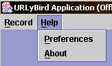
Once you click preference you will see the following preferences window:
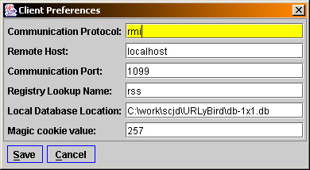
Communication Protocol: Set the communication to 'rmi'. This is the
only protocol currently supported.
Remote host: The server host name or an IP address. This is used if you
are in server mode and default (online mode).
Communication Port: The port name for the registry (usually 1099). If
in server mode all its clients will need to match the same.
Registry Lookup Name: The registry name lookup. The unique name in the
registry.
Local Database Location: The location of the database. Used in server
and stand-alone mode.
Back To
Top
Changing Modes
Application mode may be switched at runtime from Offline (Stand Alone
Mode) to Online (Networked Mode) and vice-versa.
To toggle between modes go to Record>Work Online or Record>Work
Online
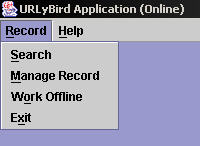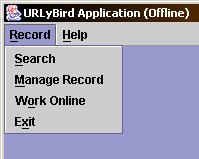
The mode selection changes automatically in the file item to reflect
the mode to which the user can switch to.
For eg, if you are in Offline Mode, the Work Online option will be
available only, and if you are in Online Mode, the Work Offline option
will be available only.
If a mode transition is not successful appropriate error messages will
be displayed in that mode when you use the application.
The only test to see if the mode transition was successful is to use a
data access feature.
When switching modes make sure Preferences
are set correctly. It is fairly easy to set it once and forget it.
Back To
Top
Searching For Rooms
To search for rooms , on the menu bar click on Record>Search.
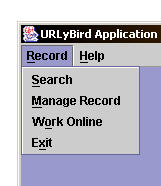
This will open a new search window as shown below:
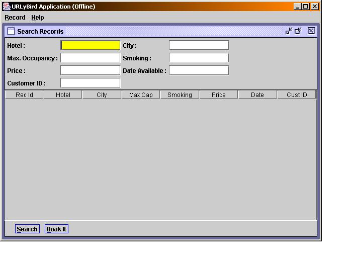
The search window consists of 3 areas:
- Search criteria area.
- Search results area
- Action buttons area
Enter the search criteria in the search criteria fields for results.
Keep the following in mind when conducting searches:
- Searches are
case-sensitive and it searches for non-exact names, instead it tries to
match the beginning characters only.
- For example, the search criteria "Ro" will match both "Rohit" and
"Roman", but "ro" will match neither.
- Not entering any search criteria
will match everything.
- There are currently no limits to the number of records returned.
- No
locks are held for the records returned in the search criteria.
After the criteria is entered, you must click on the Search button on
the bottom of the screen or hit the enter key on any field of the
search criteria screen section.
Search results if any are displayed in tabular order in the search
results screen section.
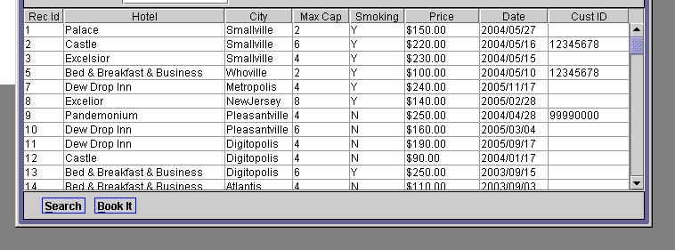
Back To
Top
Booking a Room
The application allows a room to be booked from the Search window.
3 Easy Steps to Book a Room:
- Enter a search criteria and hit enter or Search.
- Select any room by clicking on a row.
- With a row
highlighted, click on the "Book It" button.
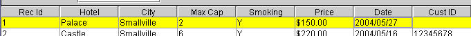
If you click on "Book It" without first selecting a row, you will
be prompted to do so.
The "Book It" button opens a Confirmation Booking modal dialog as shown
below.
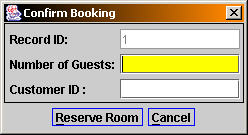
- Record ID: The id of the record that is being booked. This field
cannot be edited.
- Number of Guests: for the booking must be entered and should be
less
than or equal to the maximum occupancy for the room.
- Customer Id: The id of the customer for whom the booking must be
made.
To reserve the room click the Reserve Room button.
The following dialog box will open to get more information and confirm
the booking:
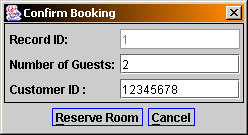
If the room available date is not within 48 hours of the current time
then the booking will not be permitted.
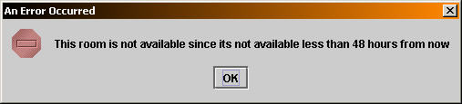
Similar validation messages are displayed if the customer id is no
8-digits,
or the number of guests exceed maximum occupancy of the room etc.
Back To
Top
Administration
Adminstration of data is made possible via the manage record user
interface.
The manage record user interface lets you add, edit, and delete records.
To open the manage record click on the Manage Record menu item as shown
below.
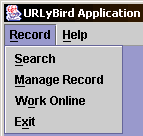
Once the Manage Record menu item is clicked an internal frame will
appear as shown below:
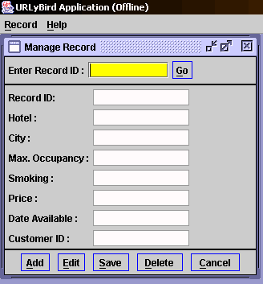
The manage record internal frame is divided into 3 areas:
- Input area
- Display area
- Action area
The input area is the area where the user provides the record id,
display area is where the data is displayed and the action area allows
the user to act on the displayed data.
- The input area consists of "Enter Record ID:" , a text field and
a "Go" button.
- Enter the record id in the text area and hit the "Go" button.
- If a record is found then the display area is populated with the
data of the record.
Use the action area's buttons to act upon the data that is displayed in
the display area.
The action buttons have interaction between each other and the display
and input area.
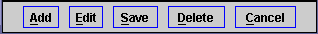
Keep the following in mind when interacting with the action area.
- Buttons will be enabled or disabled based on what actions are
permitted.
- If the Add button is clicked the data displayed in the display
area will be added onto the database.
- If the edit button is clicked all the fields of the display area
will become enabled and available for updating.
- Clicking on the save button will save the modified data into the
database for that record id.
- Delete will logically delete the data from the database file.
- Cancel clears all fields.
Back To
Top